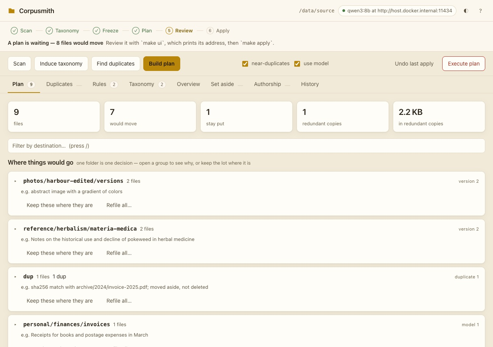

Corpusmith
Files a folder tree through a plan you review, and can move it all back
Corpusmith reads a directory tree (a Downloads folder, a decade-old document vault, a scanned archive), works out what is redundant and what each file is about, and writes you a plan. Nothing moves until you say so, and everything that moves can be moved back.

Three promises
- Nothing is ever deleted: redundant copies are moved to a dup/ folder for you to look at and delete yourself.
- Nothing leaves your machine: there is no cloud call, no telemetry and no remote asset, and tests fail if that changes.
- Everything is reversible: every move is written to an append-only, hash-chained ledger before it happens, and undo replays it backwards.
From scan to apply
The scan is the only stage that opens your files: it reads sizes, hashes, perceptual fingerprints and whatever text can be extracted into an index, and everything after it reads the index, so a plan can be rebuilt as often as you like. Exact duplicates are found first and win over near matches.
To file by subject, Corpusmith first proposes a set of categories drawn from a spread of your own files rather than imposed. You read that draft and freeze it before anything is classified against it, because a plan built on a draft that keeps changing cannot be compared with the next one. Every answer about a file is cached under everything that could change it, so a second run over an unchanged tree asks nothing new.
Files that are the same work rather than the same bytes, such as a Keynote deck and its PDF export, are kept together in a versions/ folder at their destination instead of being treated as duplicates.
Reviewing the plan
The review screen walks six steps: Scan, Taxonomy, Freeze, Plan, Review, Apply. Three of them, Freeze, Review and Apply, are yours and cannot be automated; clicking a step takes you to the control for it rather than doing it for you.
The plan shows one row per destination folder, largest first, because that is the decision a person actually makes. Each group shows where its files would go, what decided it, and a one-line summary of a sample file; you can keep a whole group where it is or send it somewhere else. Keeping a group records every file in it as a correction, so the next run learns from all of them at once. Corrections that repeat become proposed rules, and promoting one settles that slice of your files by rule from then on.
The ledger
Each line of the ledger names the hash of the previous line's exact bytes, so a verify step can prove nothing has been edited. Corrections are new records, nothing is rewritten, and if the ledger and the filesystem disagree, the ledger is right.
- Year
- 2026
- Medium
- software / files / archive
- Reads
- PDF, EPUB, DOCX, Pages, RTF, Ulysses, images, recordings
- Runs
- on your own machine, in Docker, with a browser review screen
- Licence
- MIT
- Repository: private